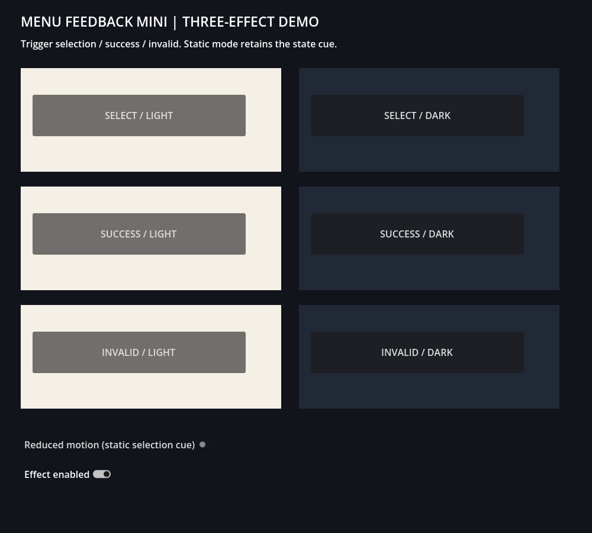

GODOT / UI FEEDBACK
ボタン操作に
三つの状態を表示
選択中・成功・今は実行できない。対象ボタンの位置や拡大率を変えず、子Controlで状態を表示する小さな素材を公開しました。
2026年9月12日公開。自社商品の紹介を含みます。AI補助で制作したオリジナルコードです。
01 / DEMO
選択・成功・無効の実描画

実Godotから保存した32連続フレームをGIF化。保存時刻で間隔を設定しています。ブラウザー実行デモや60fps動画の保証ではありません。
Selection選択：短い輪郭・塗りの強調Success成功：チェック記号と枠Invalid無効：小さい揺れと×記号この素材は入力の正しさを判定しません。成功や無効の判定はアプリ側で行い、結果に応じてtrigger()を呼びます。
02 / INTEGRATION
子Controlへ付けてイベントを接続
- 無料版はselection_feedback.gd、有料版はそれとmenu_feedback.gdをres://直下へコピー。現在の参照パスは直下を前提としています。
- Buttonの子にControlを追加し、Feedbackと命名。無料はselection_feedback.gd、有料はmenu_feedback.gdを付け、Full Rectにします。
- 有料はInspectorのkindでSelection/Success/Invalidを選択。UIイベントをtrigger()へ接続します。
SelectButtonの子にFeedbackを作成した場合の、選択フォーカスの例です。
@onready var feedback = $SelectButton/Feedback
func _ready():
$SelectButton.focus_entered.connect(feedback.trigger)
$SelectButton.focus_exited.connect(feedback.clear)終了後は静止状態表示が残ります。状態を解除するときはclear()。再triggerで既存の演出が再スタートし、新しいノードを増やしません。
03 / CONTROLS
動きを減らしても状態を残す
reduced_motion=trueで移動や脈動のない静止表示にします。effect_enabled=falseでは描画を止めます。duration・intensity・accentで時間、強さ、色を調整できます。変更後にtrigger()を呼んで状態を反映してください。
色だけでなく記号やアプリ側の説明も併用し、利用者の環境で確認してください。本素材はアクセシビリティや光過敏の認証を受けたものではありません。
04 / SCOPE
検証した構成だけを明記
Godot4.7.2・Windows・OpenGL Compatibility・GTX1060。各100回反復、終了・clear・動作中削除/再作成、別プロジェクト導入を確認。10個・60秒の診断は平均約60fps、メモリ7点一定でした。全フレーム16.67msや別機器の性能は保証しません。
他OS・描画方式・Web・モバイルは未検証。成功/無効の記号は40×24未満では非表示。音声、Godot本体、有料プラグイン、第三者VFX素材は同梱しません。
05 / DOWNLOAD
無料1効果で導入を確認
無料は選択1効果。有料は成功/無効を含む3効果と導入例。同じAPIと設定で使えます。無料だけでも選択効果を利用できます。
個人/商用ゲーム・アプリへの組込み/改変可、クレジット任意。素材単独の再配布・転売・素材パック化不可。詳細は配布ZIPのLICENSE.txt。サポートは掲載範囲の導入/不具合確認。個別開発や他engine移植は対象外です。
音を組み合わせる際の役割整理はUI音の使い分けも参照できます。